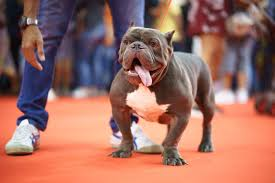
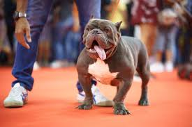

The American Bully breed was initiated by a small group of breeders in the late 1980s to early 1990s. Perhaps the most notable among these breeders is David Wilson, often credited as the founder of the American Bully. He established Razor’s Edge Kennels alongside his friend Carlos Barksdale. Their aim was to breed stockier, more muscular game-bred pit bulls with larger, block-like heads.
During this period, there were two primary types of pit bulls in the United States: the game-bred pit bulls registered with the UKC (United Kennel Club) and ADBA (American Dog Breeders Association), and the show-bred pit bulls registered with the AKC (American Kennel Club) as American Staffordshire Bull Terriers. The AKC first recognized pit bulls in 1936 but, to distance the breed from its association with dogfighting, renamed it the Staffordshire Bull Terrier (later changed to American Staffordshire Terrier). Interestingly, the dog used as the standard for this new breed was Colby’s Primo, one of the prized fighting pit bulls of John Colby – who pioneered the modern American Pitbull Terrier. Here's a link for any extra information if you want to know more about the Bully breed